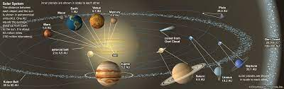
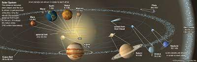

Solar System formed 4.6 billion years ago from the gravitational collapse of a giant interstellar
molecular cloud.
The vast majority of the system's mass is in the Sun, with the majority of the remaining mass contained in
Jupiter.
The four inner system planets—Mercury, Venus, Earth and Mars—are terrestrial planets, being composed
primarily of rock and metal.
The four giant planets of the outer system are substantially more massive than the terrestrials.
The two largest planets, Jupiter and Saturn, are gas giants, being composed mainly of hydrogen and helium;
the next two, Uranus and Neptune,
are ice giants, being composed mostly of substances with relatively high melting points compared with hydrogen
and helium, called volatiles, such as water, ammonia and methane.
All eight have nearly circular orbits that lie close to the plane of the Earth's orbit, called the
ecliptic.
 
